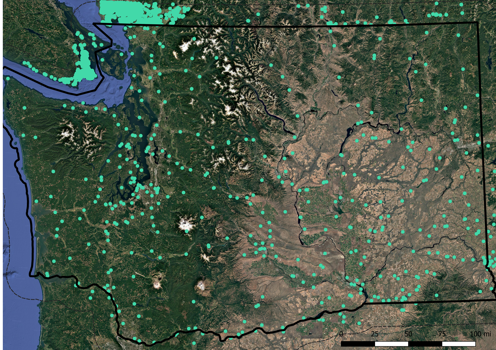
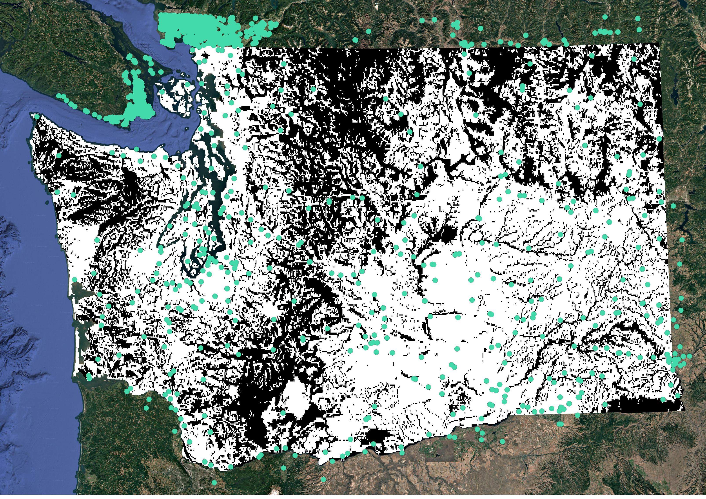
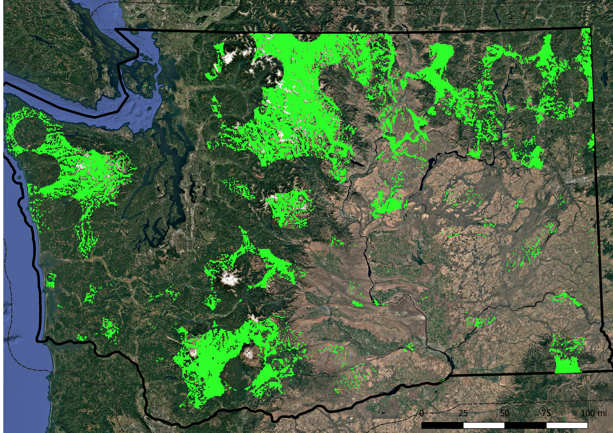
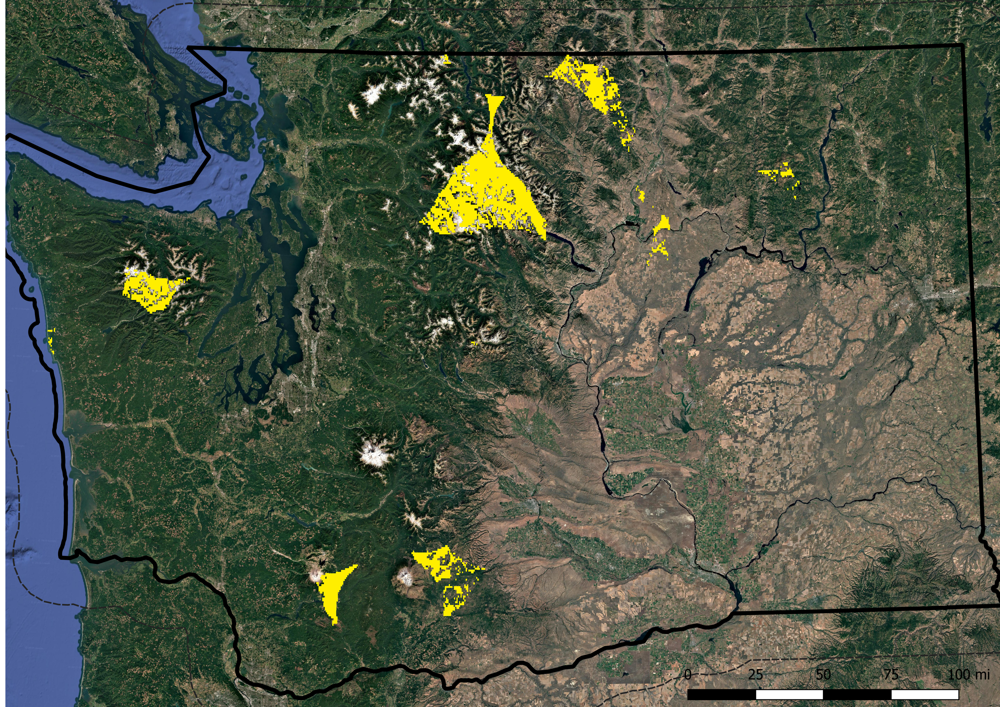
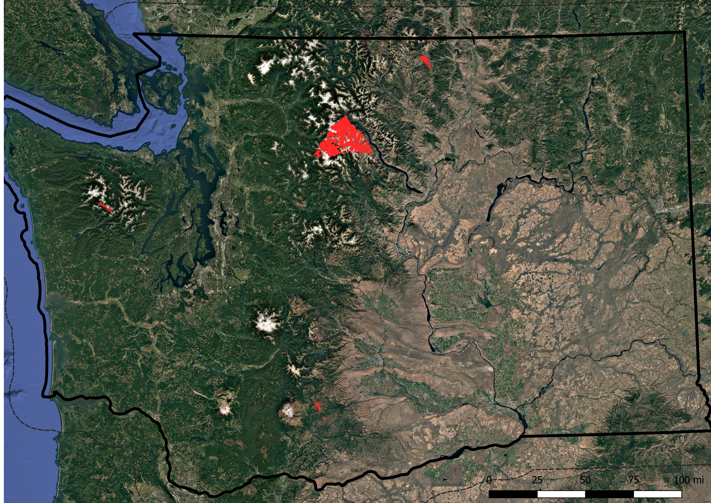
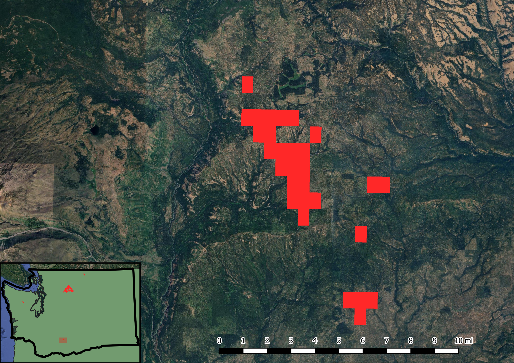
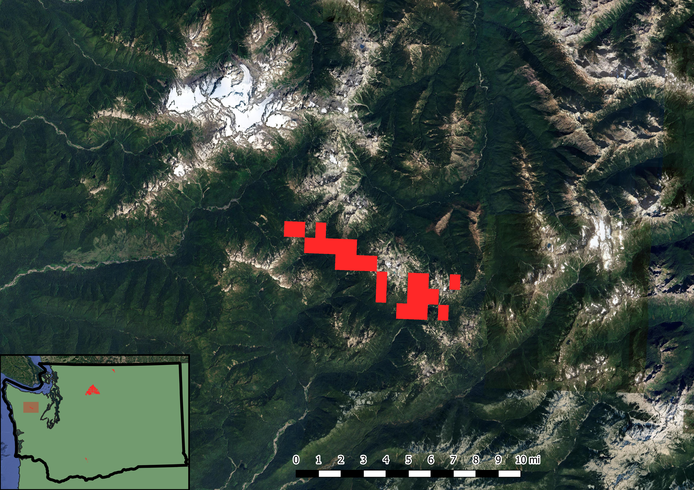
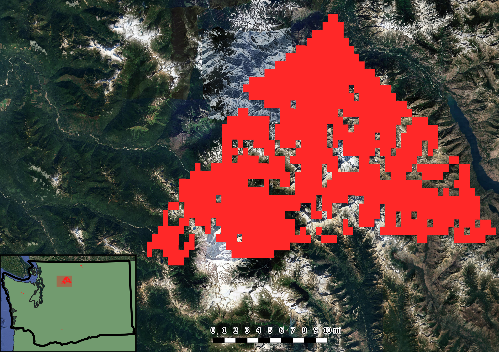
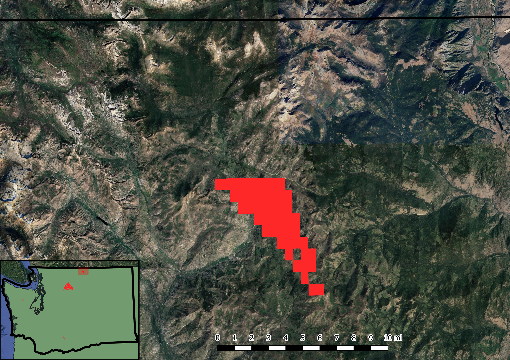

Geospatial Line-of-Sight Modeling for Cellular Coverage in Washington State
09/08/2026
This is adapted from my Geography 404 final project from June of 2025. It's arguably the GIS project I am most proud of. The problem: Everybody likes internet (or at least most of us do). The issue is that deadzones still persist across many rural and mountainous areas in Washington State.
Data sources: Cell tower locations were pulled from the 2022 FCC dataset and the 2025 CRTC (Canada) dataset.
Methodology: Clipped two 20,000+ cell tower location shapefiles to be constrained to Washington. I applied a 30-mile buffer zone around the state border because signals don't stop right at state boundaries.
Each point on the map represents a single cell tower. It came out to around 865 total towers within this clipped boundary. (Why does Vancouver have so many???)

Unmastered viewshed analysis. A viewshed calculates visible line-of-sight areas from specific observation points based on elevation data. In this case, it models the theoretical reach of signal coverage from each tower across the terrain.

Level 1 coverage, 10-mile buffer area around each tower. The areas in green may have limited service, if any at all.

Level 2 coverage, 20-mile buffer area around each tower. Yellow areas probably don't have service.

Level 3 coverage, 25-mile buffer area around each tower. Red areas definitely do not have any cell service. Total uncovered area is ~314.4 sq mi.

What these maps interpret: places with absolutely no service whatsoever, representing the farthest possible locations in the state from a cell tower. This shows us two things: 1) areas so remote that you are unlikely to get any emergency help, and 2) perfect spots for people looking to live truly off-grid and disconnected.
Here are some of those key locations:
Site 1 — Kinda near Mt. Adams (~8.95 square miles)

Site 2 — East of Mt. Olympus (~7.78 square miles)

Site 3 — Almost the entirety of the Glacier Peak Wilderness (~282.12 square miles)

Site 4 — Middle of nowheresville Okanogan County / Tonasket? (~15.55 square miles)

Limitations of Methodology:
- Assumes coverage purely based on line of sight and elevation, without taking into account vegetation density, buildings, or micro-topography.
- Signal strength radii were generalized to fixed 10, 20, and 25-mile buffers because the FCC dataset didn't specify technology types (5G, 4G LTE, and 3G all have drastically different effective ranges).
- Lumped all cellular providers together rather than isolating carrier-specific networks.
- Does not account for modern directional antennas or beamforming techniques.
- Processing time was heavy: took close to an hour to run and filter 800+ rasters. (I wanted to run this for the entire US, but the processing overhead was far too high. Potential future project?)
Conclusion:
- Despite Washington being recognized as a major tech hub, people often forget that over half the state is rural terrain. Telecom providers simply lack the financial incentive to place expensive infrastructure in sparse areas.
- Emerging technologies like Starlink and direct-to-cell satellite coverage are increasingly bridging these gaps for people living in the middle of nowhere.
- Potential backpacking sites to explore this summer???